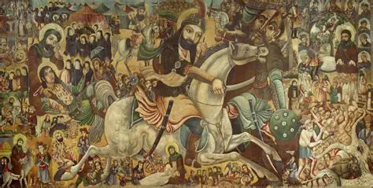
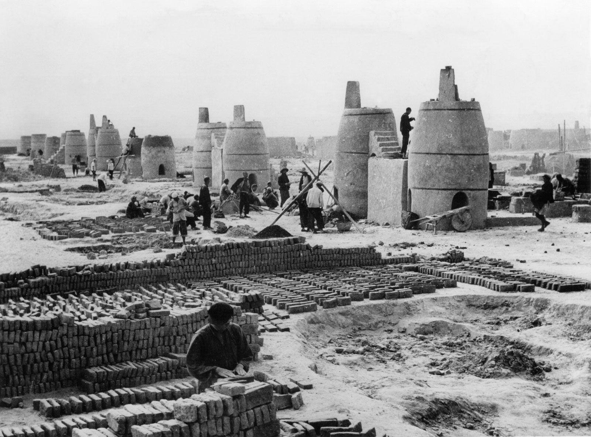

Because no one questioned a charismatic president.
"I wrote the Dune series because I had this idea that charismatic leaders ought to come with a warning label on their forehead: 'May be dangerous to your health.'"— Frank Herbert, UCLA, 1985
The Dark Side of Charismatic Leadership
Seventy million Americans watched that debate. The ones who listened on radio thought Richard Nixon won. The ones who watched on television were certain it was John F. Kennedy. Same debate, same words. The only difference was the screen.
Frank Herbert watched a science fiction audience fall in love with Paul Atreides — the hero of Dune — and it horrified him. He had written Paul as a warning. Readers took him as a savior. So Herbert wrote sequel after sequel to make the point as brutal as possible: the hero will destroy you. Not because he wants to. Because you will let him.
This website is about what happens when people stop questioning. How institutions collapse. How movements outlive the people who started them. How followers seal themselves inside a belief until nothing can reach them.
Section 1
When Charisma Meets Power
Part I — The Theory
In 1922, Max Weber identified three sources of political authority: tradition, law, and charisma. The first two are stable — they survive the death of any individual. Charisma does not. It lives in one person, and it demands total faith in that person.
Tradition
Law
Charisma
"A certain quality of an individual personality by virtue of which he is set apart from ordinary men and treated as endowed with supernatural, superhuman, or at least specifically exceptional powers."— Max Weber, Economy and Society, 1922
Institutions — legislatures, courts, free presses — exist because the system expects leaders to be flawed. Madison put it plainly in Federalist No. 51: "If men were angels, no government would be necessary." Every check, every balance, every procedural delay is built on that assumption.
Charisma breaks the assumption. When followers believe a leader is exceptional, the checks start looking like obstacles. The followers want them gone. And the leader, surrounded by devotion, starts to agree.
Part II — The Enabling
441
In favor
to
94
Against
The Kroll Opera House, Berlin, March 1933
Berlin, March 23, 1933. The Kroll Opera House, draped in swastika banners. Hitler stands before the Reichstag and asks for the legal authority to rule by decree.
The Enabling Act would let him bypass parliament, bypass the constitution, bypass every safeguard the Weimar Republic had built. A democracy would become a dictatorship — through a vote.
The Nazi Party holds 288 seats. They don't have a two-thirds majority alone. But the SA stormtroopers stand outside the building. The Communist Party's 81 deputies have already been arrested or barred from attending.
The Centre Party caves. Hitler promises to respect the Church. The promise is worthless, but the Centre's leader, Ludwig Kaas, tells his caucus to vote yes. One by one, the smaller parties fall in line. The pressure of the crowd, the SA outside, the momentum — resistance feels pointless.
Only the Social Democrats hold. 94 votes against, in a room full of men who have already surrendered. Otto Wels, the SPD leader, stands to speak: "You can take our liberty and our lives, but you cannot take our honor."
No tanks. No gunfire. The institutions of German democracy were not destroyed by force. Elected officials handed them over, to a man whose crowds made resistance feel pointless.
Part III — The Fire
1966
Red Guards rally, Beijing, 1966
Beijing, May 1966. Mao Zedong is 72. He has led the People's Republic for seventeen years, but his grip on the Party is slipping. Rivals in the Politburo are quietly sidelining him.
So Mao goes around them. He bypasses his own party, his own government, his own chain of command. He writes a big-character poster — "Bombard the Headquarters" — and calls on China's students to attack the system he built.
Mao mobilizes millions of Red Guards. They flood the streets, drag professors from classrooms, beat officials in public, destroy temples, burn books. The chaos is total. The loyalty is absolute.
Red Guard factions turn on each other. Provincial governments collapse. Liu Shaoqi — the second most powerful man in China — is dragged from his home and left to die in detention. The revolution is eating its own.
Even Mao cannot stop it. He sends the army to suppress the Red Guards — the very forces he summoned two years earlier. The weapon he built no longer answers to him.
The Cultural Revolution officially ends. The toll: an estimated 500,000 to 2 million dead, up to 36 million persecuted.
"To rebel is justified — bombard the headquarters!"— Mao Zedong, 1966
Hitler got the institutions out of his way. Mao went further — he unleashed a force that got out of his way. The pattern keeps repeating. A leader rises above the system. The system yields. Then the leader discovers that the thing he unleashed does not answer to him either.
Section 2
The Movement Outlives the Leader
Case A — Lenin → Stalin
Lenin and Stalin, Gorki, 1922
Vladimir Lenin died on January 21, 1924. He had spent his final months writing a document that the Party would later call his "Testament." In it, he warned that Stalin was "too rude" and should be removed from the position of General Secretary. He proposed replacing him with someone "more patient, more loyal, more polite."
The Testament was read aloud at the 13th Party Congress. The delegates listened, discussed it briefly, and did nothing.
"With the banner of Lenin..." — Soviet propaganda, 1933
Stalin kept his position. Within five years, he had outmaneuvered every rival. He renamed Petrograd — the city where the revolution began — to Leningrad. He turned Lenin's body into a public relic, preserved in a glass case on Red Square for pilgrims to visit. He wrapped every policy in Lenin's language, every purge in Lenin's authority. The dead man could not object.
By the mid-1930s, Stalin had built something Lenin never intended: a totalitarian state where disagreement was a death sentence. The Great Purge of 1936–1938 executed or imprisoned hundreds of thousands — party members, military officers, intellectuals, anyone who might one day challenge Stalin's reading of what Lenin "really meant."
Execution was not enough. The Party rewrote the visual record, erasing rivals from official photographs. Drag the slider to see what was removed.
⇆
Original (1920)Retouched
Lenin at Sverdlov Square, 1920. Trotsky and Kamenev stood beside the podium — until they didn't.
⇆
OriginalAfter Yezhov's execution
Stalin and secret police chief Nikolai Yezhov at the Moscow Canal. After Yezhov was shot in 1940, he vanished from the photograph too.
0
Executed
0
Sent to Gulag
Prisoners at Belbaltlag, building the White Sea–Baltic Canal
Lenin's revolution was supposed to liberate the working class. Under Stalin, it became the justification for a system of forced labor camps stretching across Siberia. The ideology did not change. The words stayed the same. Only the meaning shifted — and there was no one left alive who was allowed to say so.
"Stalin is too rude... I propose to find a way to remove Stalin from that position and appoint to it another man who is more patient, more loyal, more polite."— Lenin's Testament, January 4, 1923
Case B — Muhammad → The Fracture
The early Islamic world
Muhammad died in Medina on June 8, 632 CE. He left behind a community of believers, a rapidly expanding territory, and no clear successor.
Within hours, the crisis began. One faction backed Abu Bakr, Muhammad's closest companion. Another insisted on Ali, his cousin and son-in-law — the man they believed Muhammad had designated at Ghadir Khumm. Both sides were certain. Neither side could ask the only person whose answer would have settled it.

The Battle of Karbala, 680 CE
Abu Bakr became the first caliph. Over the next three decades, three of the first four caliphs were assassinated. In 680 CE, Ali's son Husayn marched to Karbala to challenge the Umayyad caliph Yazid. His forces were massacred. That death became the founding trauma of Shia Islam — a grief re-enacted every year during Ashura, fourteen centuries later.
Ashura commemoration — mourning Husayn, 1400 years later
632
0 years
since the succession crisis in Medina
1,850,000+ dead
Section 3
Followers Are Self-Sealing

Backyard steel furnaces, China, late 1950s
Somewhere in rural Henan province, 1959. A local Party secretary stands in a field. The wheat is thin. He knows the harvest will fall short — maybe thirty percent of last year. He also knows what happened to the last official who reported low numbers. The man was denounced as a rightist, stripped of his position, and sent to a labor camp. His family was not told where.
The secretary writes his report. Record yield. Twice the actual harvest. He sends it up the chain.
100 tons
Actual harvest
The actual harvest: roughly 100 tons. The Party secretary knows this. Everyone in the village knows this.
The village secretary writes 200 tons. Double the truth. He has seen what happens to those who report low numbers.
The county official receives six reports, all inflated. He adds his own margin. 350 tons.
The prefecture consolidates. Nobody wants to be the one with lower numbers. 600 tons.
The provincial report reaches Beijing. 1,000 tons. Ten times reality. Mao reads this and orders the surplus exported.
The number collapses into reality. There is no surplus. There is famine.
0
estimated deaths, 1959–1961
Every local official in the chain knew the real numbers. The information that could have prevented the famine existed at every level of the system. It could not travel upward, because traveling upward meant telling Mao he was wrong, and telling Mao he was wrong meant you were the enemy. The system did not lack information. It was sealed against it.
"A man with a conviction is a hard man to change. Tell him you disagree and he turns away. Show him facts or figures and he questions your sources. Appeal to logic and he fails to see your point."— Leon Festinger, 1957
The harvest was 100 tons.
The Party says the harvest was 1,000 tons.
What do you report?
In 1959, every official chose "Reject."
Belief in the Party outranked the evidence of their own fields.
The Confession
Moscow Show Trials, 1936–1938
Moscow, 1936. Stalin's prosecutors put a group of Old Bolsheviks on trial. These men — Kamenev, Zinoviev, Bukharin — had fought alongside Lenin. They had built the Soviet state. The charge was treason.
They confessed. In open court, in front of foreign journalists, they declared themselves enemies of the people. Some had been tortured. But Bukharin's confession was different. He spoke at length, with apparent conviction. Arthur Koestler tried to explain it in Darkness at Noon: if you have spent your entire life believing that the Party is the instrument of history, then admitting the Party is wrong means your life was pointless. Confession — even false confession — is the last way to remain loyal.
Lev Kamenev
Politburo member, revolutionary
Confessed → Executed
Grigory Zinoviev
Comintern chairman
Confessed → Executed
Nikolai Bukharin
Party theoretician, Pravda editor
Confessed → Executed
Alexei Rykov
Chairman of the Council
Confessed → Executed
Karl Radek
Revolutionary journalist
Confessed → Imprisoned → Died
The Party secretary who lied about the harvest and the Old Bolshevik who confessed to a crime he did not commit are doing the same thing. They are protecting the belief at the cost of everything else. The system is sealed. Information that contradicts the belief cannot enter.
Today this runs on infrastructure Festinger could not have imagined. Social media algorithms optimize for engagement. Devotion engages. Doubt does not. Eli Pariser called this the filter bubble — an environment where the information you see is pre-selected to confirm what you already believe. The technology is new. The psychology is Festinger's. The scale is what changed.
"Mass movements can rise and spread without belief in a God, but never without belief in a devil."— Eric Hoffer, The True Believer, 1951
Takeaway
If you have read this far, you might be thinking: we need better leaders. Wiser ones. More careful ones.
That thought is the trap. It is the same logic that dismantled the Weimar Republic, that fueled the Cultural Revolution, that turned Lenin's revolution into Stalin's prison state. Every one of those catastrophes began with a population convinced they had found the right person.
The founders of the American republic read their history. They did not design for angels. They designed for men who would inevitably become corrupt, cowardly, or deluded — and they tried to build a system that could survive them anyway.
Madison and his contemporaries built what they called "auxiliary precautions" — structures that keep functioning even when the people inside them fail:
1.
Separation of powers. No single person holds enough authority to act alone. This is slow by design.
2.
Term limits and succession rules. Written in advance, enforced without exception. The leader leaves. The system stays.
3.
Independent press and judiciary. Their job is to say no — to the leader, to the crowd, to the mood of the moment.
Nobody chants for judicial independence. There are no rallies for procedural checks. You cannot build a mass movement around the separation of powers. These things are boring. That is why they work.
The founders spent a summer in Philadelphia designing these cages. They read Thucydides, studied Rome, argued for months over how to constrain ambition. They were meticulous.
It took 240 years to find someone willing to take them apart.
In his first year back in office, Donald Trump signed hundreds of executive orders — governing by decree in a system designed to prevent exactly that. He created DOGE, an unelected body with no congressional authorization, and gave it access to Treasury payment systems, Medicare records, and Social Security data.
When a federal judge ordered his administration to stop deporting Venezuelan immigrants mid-flight, the planes kept flying. When the Supreme Court ruled that a man mistakenly deported to El Salvador must be brought back, the administration said it was El Salvador's problem.
ICE agents began arresting people at immigration courthouses — the very hearings the government required them to attend. Arrests of people with no criminal record rose sharply in a single year.
By December 2025, ICE was holding people in detention at the highest number ever recorded.
The cages are still standing — most of them. But they are being opened from the inside, with keys the founders themselves provided. Norms turned out not to be laws. Institutions turned out not to enforce themselves. And a country that was designed to distrust its leaders turned out to be perfectly capable of worshipping one.
The founders designed for corruption, for ambition, even for delusion. They did not design for an audience that would watch the dismantling and call it entertainment.
The next charismatic leader will come. They always do. Whether anyone still cares about the cages — that we do not know yet.
References
Frank Herbert, UCLA Speech, April 17, 1985 (transcript: theaugustry.com)
Max Weber, Economy and Society (1922)
James Madison, Federalist No. 51 (1788)
Eric Hoffer, The True Believer (1951)
Leon Festinger, When Prophecy Fails (1956)
Arthur Koestler, Darkness at Noon (1940)
Roderick MacFarquhar & Michael Schoenhals, Mao's Last Revolution (2006)
Richard J. Evans, The Coming of the Third Reich (2005)